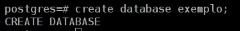

Replicação de servidores de banco de dados para garantir a disponibilidade do serviço
INTRODUÇÃO
- Replicação de banco de dados é feita para aumentar a disponibilidade do banco de dados, Distribuição de carga, realizar backup ou atualizar a versão do banco de dados sem ter pausa no fornecimento dos dados.
DESENVOLVIMENTO
- Replicação de banco de dados é feita para aumentar a disponibilidade do banco de dados, Distribuição de carga, realizar backup ou atualizar a versão do banco de dados sem ter pausa no fornecimento dos dados.
- Replicação é a copia dos dados de um banco de dados para um outro banco de dados, estes bancos de dados podem estar na mesma maquina separado logicamente ou pode estar no mesmo local ou em um local remoto. Existe dois tipos de replicação: síncrona e assíncrona.
- A replicação síncrona as ações são replicados instantaneamente em todos os Bancos de Dados. A vantagem deste método é que em todos os bancos de dados vao estar exatamente com os mesmo dados, não havendo perda de dados caso o servidor mestre pare.
- A grande desvantagem é a perca de performance, para que todos os bancos de dados fiquem com exatamente com os mesmos dados no mesmo momento, quando um usuário faz uma ação esta ação só é concluída apos ela ser realizada em todos os bancos de dados, aumentando significamente o tempo de resposta.
- A replicação assíncrona não é instantânea, o servidor Máster aguarda atingir uma determinada quantidade de ações para então mandar os dados para os servidores
- Existe 3 tipos de replicação de um banco de dados: Replicação no mesmo local, replicação remota, e replicação mista.
-Replicação no mesmo local
- Motivos:
Prevenção contra falha no disco;
Prevenção contra falha no rack;
Prevenção contra pane eletrica;
-Replicação remota
- Motivos:
Falta de energia no servidor máster, incêndios, alagamentos, desastres naturais.
-Replicação mista usa a replicação local e replicação remota.
- Algumas vantagens da replicação:
- Recuperação imediata dos sistemas em caso de desastres; Pode utilizar o conceito de espelhamento de servidor;Distribuição de carga para que nenhum sistema fique sobrecarregado;
Realizando a replicação do PostgreSQL
- Servidor Máster:
Edite o seguinte arquivo de configuração do PostgreSQL
#vim /var/lib/postgresql/9.2/main/postgresql.conf
Edite as linhas:
listen_addresses = '*' #Para o servidor
aceitar conexões de todos os IP's
wal_level = hot_standby #Nível do Servidor
max_wal_senders = 1 #numero de servidores escravos
wal_keep_segments = 5 #MB de segmentos
Acrescente a seguinte linha no arquivo de configuração /var/lib/postgresql/9.2/main/pg_hba.conf
host replication replicador IPmaquinaEscrava trust
Reinicie o PostgreSQL
#/etc/init.d/postgresql restart
Criar usuário para replicação
#su - postgres
$psql
#create user replicador replication;
- Servidor Escravo:
Pare o serviço do PostgreSQL:
#/etc/init.d/postgresql stop
Remover banco de dados existente
#rm -RF /var/lib/postgresql/9.2/main*
Direcionando a pasta de Replicação.
#pg_basebackup -D /var/lib/postgresql/9.2/main -h IpServidorMestre -U replicador
Criar arquivo recovery.conf
#vim/var/lib/pgsql/data/post/recovery.conf
standby_mode=on
primary_conninfo='host=IpServidorMaster user=replicador application_name=debian2'
trigger_file='/tmp/pgtrigger'
Inicie o serviço do PostgreSQL
#/etc/init.d/postgresql start
RESULTADOS
- Para verificar se o Servidor esta no modo Escravo ou Mestre utilize a função pg_is_in_recovery(). Esta função retorna V quando esta em modo escravo e retorna F quando esta em modo Mestre
- Para promover o Servidor Escravo para Mestre:
- Com este arquivo criado o Servidor se torna Mestre
- Banco de dados do Servidor Mestre:
- Banco de Dados do Servidor Escravo:

- Criando um Banco de Dados no servidor Mestre:

- O Banco de Dados ‘exemplo’ foi replicado para o servidor Escravo:
CONCLUSÃO
- Para garantir disponibilidade dos servidores de Banco de Dados é essencial que seja feita a replicação dos mesmos,para que o sistema não seja interrompido em caso de eventos planejados ou não planejados. Exemplo destes eventos: Pane elétrica, alagamento, incêndio, Atualização do Banco de Dados
REFERÊNCIAS BIBLIOGRÁFICAS
- http://www.devmedia.com.br/introducao-a-replicacao-e-alta-disponibilidade-no-postgresql/6140
- https://www.youtube.com/watch?v=J2VqnkToPzI&t=625s
- http://www.dbexperts.com.br/replicacao/intro